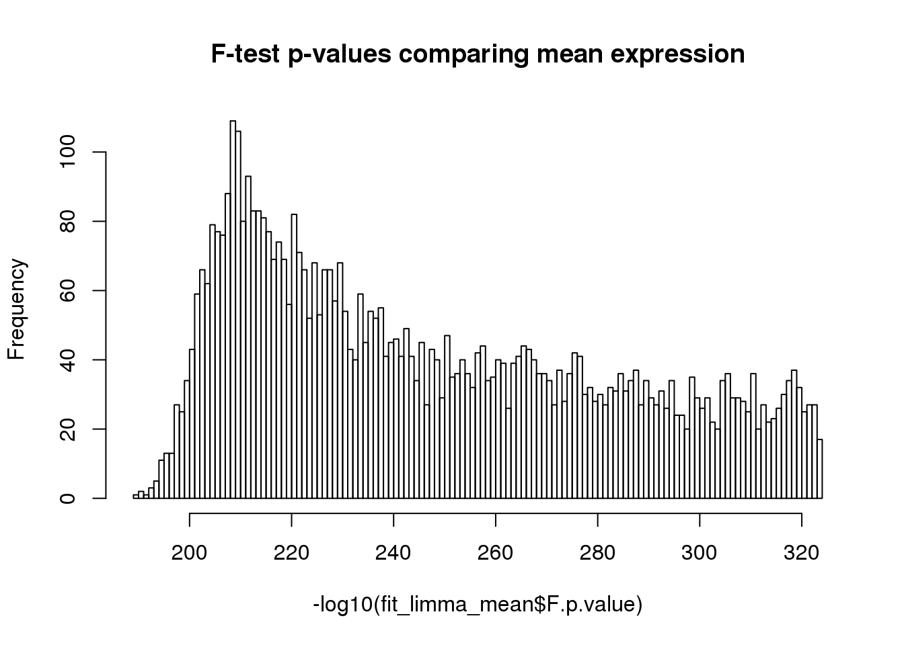
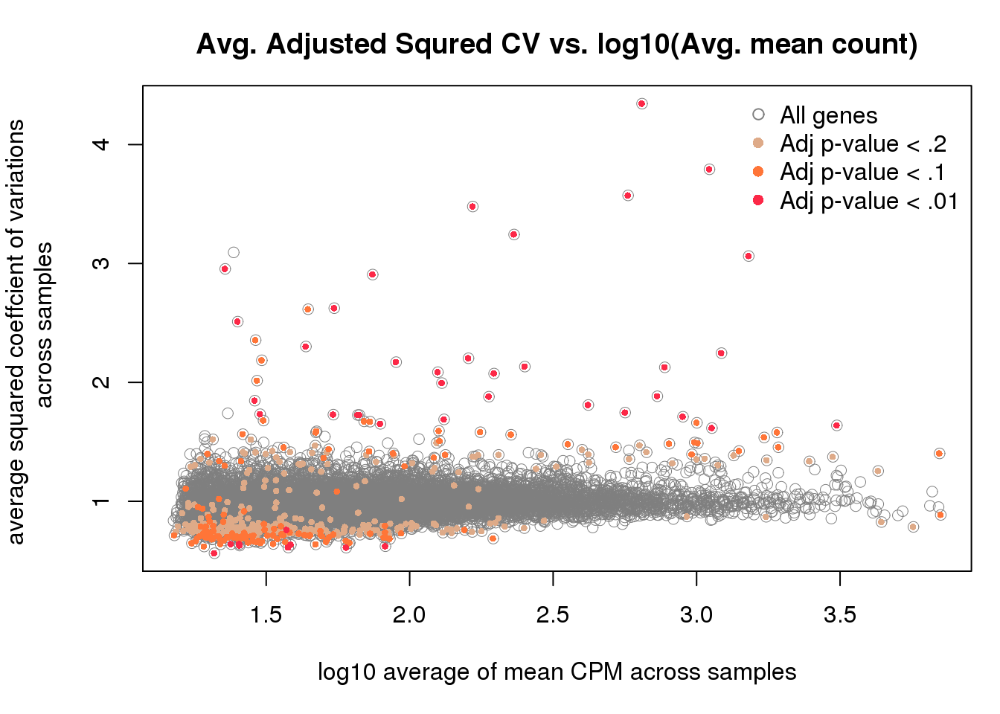
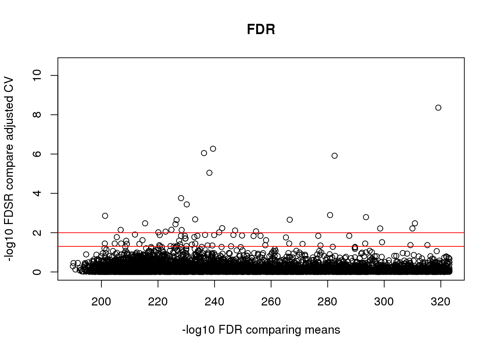
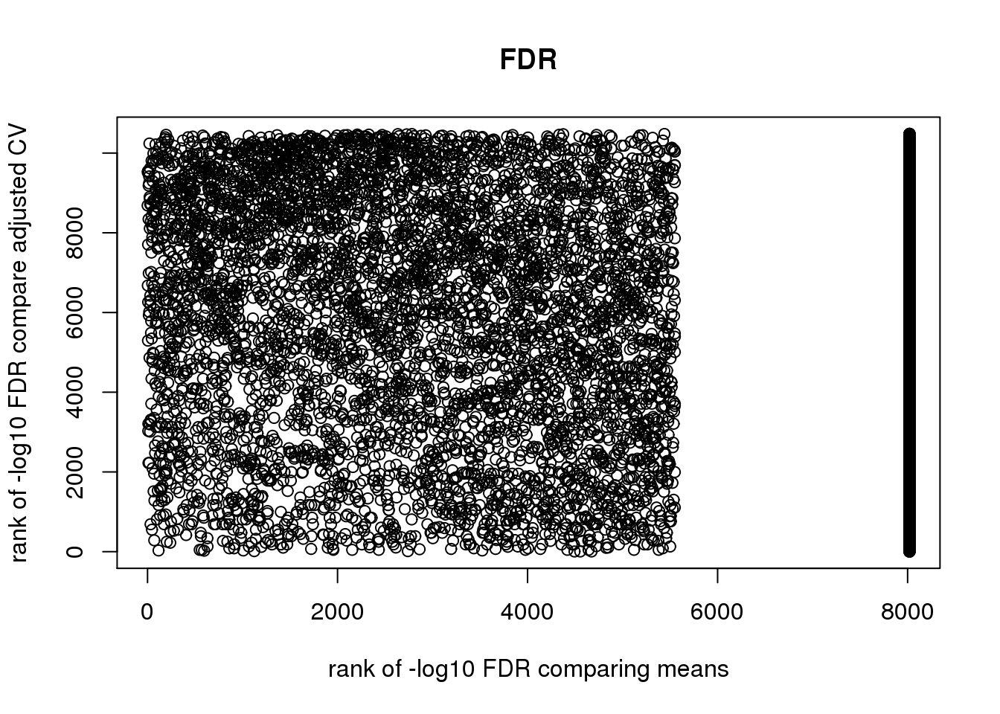
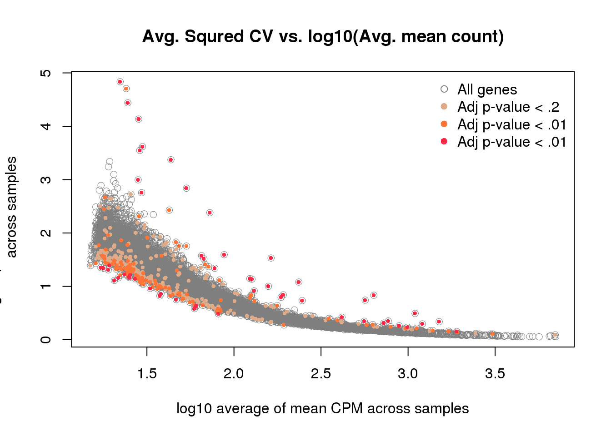
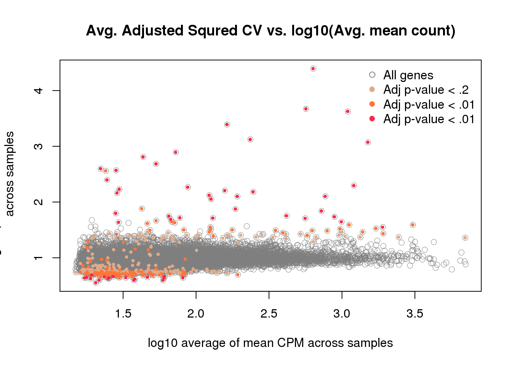
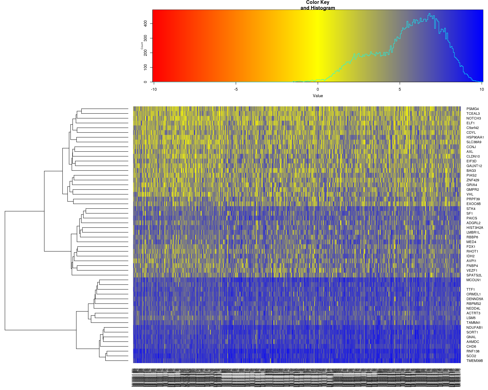

Last updated: 2015-10-16
Code version: 62ced37788d540a4808e1a509096c32704067abe
Previously, we compared normalized coefficient of variations across individuals. Here, we will also compare the mean gene expression across individuals, using single cell sequencing data and bulk RNA-seq data.
It would be interesting to learn the possible overlap or non-overlap between the genes that we observed significant individual differences in coefficient of variations versus those different in mean gene expression levels across cells.
library("data.table")
library("dplyr")
library("limma")
library("edgeR")
library("ggplot2")
library("grid")
theme_set(theme_bw(base_size = 12))
source("functions.R")Input annotation of only QC-filtered single cells
anno_qc <- read.table("../data/annotation-filter.txt", header = TRUE,
stringsAsFactors = FALSE)
head(anno_qc) individual replicate well batch sample_id
1 NA19098 r1 A01 NA19098.r1 NA19098.r1.A01
2 NA19098 r1 A02 NA19098.r1 NA19098.r1.A02
3 NA19098 r1 A04 NA19098.r1 NA19098.r1.A04
4 NA19098 r1 A05 NA19098.r1 NA19098.r1.A05
5 NA19098 r1 A06 NA19098.r1 NA19098.r1.A06
6 NA19098 r1 A07 NA19098.r1 NA19098.r1.A07Input molecule counts that are filtered, transformed, and also processed to remove unwanted variation from batch effet. ERCC genes are also removed.
molecules_qc <- read.table("../data/molecules-final.txt", header = TRUE, stringsAsFactors = FALSE)Input moleclule counts before log2 CPM transformation.
molecules_filter <- read.table("../data/molecules-filter.txt", header = TRUE, stringsAsFactors = FALSE)
molecules_filter <- molecules_filter[which(rownames(molecules_filter) %in% rownames(molecules_qc)), ]
stopifnot(dim(molecules_filter) == dim(molecules_qc))Compute per batch coefficient of variation.
Include only genes with positive coefficient of variation. Some genes in this data may have zero coefficient of variation, because we include gene with more than 0 count across all cells.
molecules_cv_batch <-
lapply(1:length(unique(anno_qc$batch)), function(per_batch) {
molecules_per_batch <- 2^molecules_qc[ , unique(anno_qc$batch) == unique(anno_qc$batch)[per_batch] ]
mean_per_gene <- apply(molecules_per_batch, 1, mean, na.rm = TRUE)
sd_per_gene <- apply(molecules_per_batch, 1, sd, na.rm = TRUE)
cv_per_gene <- data.frame(mean = mean_per_gene,
sd = sd_per_gene,
cv = sd_per_gene/mean_per_gene)
rownames(cv_per_gene) <- rownames(molecules_qc)
cv_per_gene <- cv_per_gene[rowSums(is.na(cv_per_gene)) == 0, ]
cv_per_gene$batch <- unique(anno_qc$batch)[per_batch]
# Add sparsity percent
molecules_count <- molecules_filter[ , unique(anno_qc$batch) == unique(anno_qc$batch)[per_batch]]
cv_per_gene$sparse <- rowMeans(as.matrix(molecules_count) == 0)
return(cv_per_gene)
})
names(molecules_cv_batch) <- unique(anno_qc$batch)
dim(molecules_cv_batch[[1]])[1] 10483 5Merge summary data.frames.
df_plot <- do.call(rbind, molecules_cv_batch)Compute rolling medians.
library(zoo)
# Compute a data-wide coefficient of variation on CPM normalized counts.
data_cv <- apply(2^molecules_qc, 1, sd)/apply(2^molecules_qc, 1, mean)
# Order of genes by mean expression levels
order_gene <- order(apply(2^molecules_qc, 1, mean))
# Rolling medians of log10 squared CV by mean expression levels
roll_medians <- rollapply(log10(data_cv^2)[order_gene], width = 50, by = 25,
FUN = median, fill = list("extend", "extend", "NA") )
ii_na <- which( is.na(roll_medians) )
roll_medians[ii_na] <- median( log10(data_cv^2)[order_gene][ii_na] )
names(roll_medians) <- rownames(molecules_qc)[order_gene]
# re-order rolling medians
reorder_gene <- match(rownames(molecules_qc), names(roll_medians) )
head(reorder_gene)[1] 225 3650 4564 6158 3352 1963roll_medians <- roll_medians[ reorder_gene ]
head(names(roll_medians))[1] "ENSG00000237683" "ENSG00000188976" "ENSG00000187608" "ENSG00000188157"
[5] "ENSG00000078808" "ENSG00000176022"head(rownames(molecules_qc))[1] "ENSG00000237683" "ENSG00000188976" "ENSG00000187608" "ENSG00000188157"
[5] "ENSG00000078808" "ENSG00000176022"Compute adjusted coefficient of variation.
# adjusted coefficient of variation on log10 scale
log10cv2_adj <-
lapply(1:length(molecules_cv_batch), function(per_batch) {
foo <- log10(molecules_cv_batch[[per_batch]]$cv^2) - roll_medians
return(foo)
})
df_plot$log10cv2_adj <- do.call(c, log10cv2_adj)Compare adjusted CVs
library(limma)
df_limma <- matrix(df_plot$log10cv2_adj,
nrow = nrow(molecules_qc), ncol = 9, byrow = FALSE)
design <- data.frame(individual = factor(rep(unique(anno_qc$individual), each = 3) ),
rep = factor(rep(c(1:3), times = 3)) )
colnames(df_limma) <- with(design, paste0(individual, rep))
fit_limma <- lmFit(df_limma, design = model.matrix( ~ individual, data = design))
fit_limma <- eBayes(fit_limma)False discover control adjustment.
F.p.adj <- p.adjust(fit_limma$F.p.value, method = "fdr")Cutoffs
df_cuts <- data.frame(cuts = c(.001, .01, .05, .1, .15, .2))
df_cuts$sig_count <- sapply(1:6, function(per_cut) {
sum(F.p.adj < df_cuts$cuts[per_cut] )
})
df_cuts cuts sig_count
1 0.001 24
2 0.010 54
3 0.050 115
4 0.100 179
5 0.150 290
6 0.200 423Almost all of the genes came out to be statistically significant due the large sample size (about ~70 sample points per replicate, per individual).
fit_limma_mean <- lmFit(molecules_qc,
design = model.matrix(~factor(individual), data = anno_qc) )
fit_limma_mean <- eBayes(fit_limma_mean)
summary(fit_limma_mean$F.p.value) Min. 1st Qu. Median Mean 3rd Qu. Max.
0.000e+00 0.000e+00 0.000e+00 1.985e-194 0.000e+00 1.180e-190 Histogram of p-values.
hist(-log10(fit_limma_mean$F.p.value),
main = "F-test p-values comparing mean expression", breaks = 100)
FDR
padj_mean_single <- p.adjust(fit_limma_mean$F.p.value, method = "fdr")
summary(padj_mean_single) Min. 1st Qu. Median Mean 3rd Qu. Max.
0.000e+00 0.000e+00 0.000e+00 1.985e-194 0.000e+00 1.180e-190 Mean versus coefficient of variation comparisons
plot(x = -log10(fit_limma_mean$F.p.value),
y = -log10(fit_limma$F.p.value),
xlab = "-log10 F-test p-value comparing means",
ylab = "-log10 F-test p-value compare adjusted CV",
main = "Unadjusted F-test p-values")
abline( h = -log10(.01), col = "red")
plot(x = -log10(padj_mean_single),
y = -log10(F.p.adj),
xlab = "-log10 FDR comparing means",
ylab = "-log10 FDSR compare adjusted CV",
main = "FDR")
abline( h = -log10(.01), col = "red")
abline( h = -log10(.05), col = "red")
Overlap of the significant genes
*Adjusted p-value cut-offs
cuts <- c(.001, .01, .05, .1, .15, .2)
both_table <- lapply(1:6, function(per_cut) {
table(F.p.adj < df_cuts$cuts[per_cut],
padj_mean_single < df_cuts$cut[per_cut])
})
names(both_table) <- cuts
both_table$`0.001`
TRUE
FALSE 10459
TRUE 24
$`0.01`
TRUE
FALSE 10429
TRUE 54
$`0.05`
TRUE
FALSE 10368
TRUE 115
$`0.1`
TRUE
FALSE 10304
TRUE 179
$`0.15`
TRUE
FALSE 10193
TRUE 290
$`0.2`
TRUE
FALSE 10060
TRUE 423*Ranks of adjusted p-values
plot(x = rank(-log10(padj_mean_single)),
y = rank(-log10(F.p.adj)),
xlab = "rank of -log10 FDR comparing means",
ylab = "rank of -log10 FDR compare adjusted CV",
main = "FDR")
df_compare <-
data.frame(mean = rowMeans( as.matrix(
do.call(cbind, lapply(molecules_cv_batch, "[[", 1) ) ) ),
cv2 = rowMeans( as.matrix(
do.call(cbind, lapply(molecules_cv_batch, "[[", 3) ) )^2 ),
adj_cv2 = rowMeans( 10^as.matrix(
do.call(cbind, log10cv2_adj) ) ) )
library(broman)
crayon <- brocolors("crayons")
with(df_compare, plot(x = log10(mean), y = cv2, pch = 1, cex = 1, col = "grey50",
lwd = .5,
ylab = "average squared coeffcient of variations \n across samples",
xlab = "log10 average of mean CPM across samples") )
with(df_compare[F.p.adj < .2, ], points(x = log10(mean), y = cv2, pch = 16, cex = .6,
col = crayon["Tumbleweed"]) )
with(df_compare[F.p.adj < .1, ], points(x = log10(mean), y = cv2, pch = 16, cex = .6,
col = crayon["Orange"]) )
with(df_compare[F.p.adj < .01, ], points(x = log10(mean), y = cv2, pch = 16, cex = .6,
col = crayon["Scarlet"]) )
title(main = "Avg. Squred CV vs. log10(Avg. mean count)")
legend("topright", pch = c(1, 16, 16, 16),
legend = c("All genes", "Adj p-value < .2",
"Adj p-value < .1", "Adj p-value < .01"),
col = c("grey50", crayon[c("Tumbleweed", "Orange", "Scarlet")]),
bty = "n")
with(df_compare, plot(x = log10(mean), y = adj_cv2, pch = 1, cex = 1, col = "grey50",
lwd = .5,
ylab = "average squared coeffcient of variations \n across samples",
xlab = "log10 average of mean CPM across samples") )
with(df_compare[F.p.adj < .2, ], points(x = log10(mean), y = adj_cv2, pch = 16, cex = .6,
col = crayon["Tumbleweed"]) )
with(df_compare[F.p.adj < .1, ], points(x = log10(mean), y = adj_cv2, pch = 16, cex = .6,
col = crayon["Orange"]) )
with(df_compare[F.p.adj < .01, ], points(x = log10(mean), y = adj_cv2, pch = 16, cex = .6,
col = crayon["Scarlet"]) )
title(main = "Avg. Adjusted Squred CV vs. log10(Avg. mean count)")
legend("topright", pch = c(1, 16, 16, 16),
legend = c("All genes", "Adj p-value < .2",
"Adj p-value < .1", "Adj p-value < .01"),
col = c("grey50", crayon[c("Tumbleweed", "Orange", "Scarlet")]),
bty = "n")
Heatmap
library(mygene)
gene_symbols <- getGenes(rownames(molecules_qc),
fields = c("name", "symbol") ) [ , c("query", "symbol")]
head(gene_symbols)DataFrame with 6 rows and 2 columns
query symbol
<character> <character>
1 ENSG00000237683 NA
2 ENSG00000188976 NOC2L
3 ENSG00000187608 ISG15
4 ENSG00000188157 AGRN
5 ENSG00000078808 SDF4
6 ENSG00000176022 B3GALT6library(gplots)
order_cv <- order(F.p.adj)[F.p.adj < .01]
my_palette <- colorRampPalette(c("red", "yellow", "blue"))(n = 299)
heatmap.2(as.matrix(molecules_qc[order_cv, ]),
symm = FALSE, col = my_palette,
Colv = "NA", trace = "none", labRow = gene_symbols$symbol[ order_cv ])
kable(queryMany(rownames(molecules_qc)[which(F.p.adj< .01)], scopes = "ensembl.gene",
fields=c("summary"), species="human") )Finished
Pass returnall=TRUE to return lists of duplicate or missing query terms.| summary | query | _id | notfound |
|---|---|---|---|
| The cannabinoid delta-9-tetrahydrocannabinol is the principal psychoactive ingredient of marijuana. The proteins encoded by this gene and the cannabinoid receptor 1 (brain) (CNR1) gene have the characteristics of a guanine nucleotide-binding protein (G-protein)-coupled receptor for cannabinoids. They inhibit adenylate cyclase activity in a dose-dependent, stereoselective, and pertussis toxin-sensitive manner. These proteins have been found to be involved in the cannabinoid-induced CNS effects (including alterations in mood and cognition) experienced by users of marijuana. The cannabinoid receptors are members of family 1 of the G-protein-coupled receptors. | ENSG00000188822 | 1269 | NA |
| The secreted protein encoded by this gene is growth factor-inducible and promotes the adhesion of endothelial cells. The encoded protein interacts with several integrins and with heparan sulfate proteoglycan. This protein also plays a role in cell proliferation, differentiation, angiogenesis, apoptosis, and extracellular matrix formation. | ENSG00000142871 | 3491 | NA |
| NA | ENSG00000236334 | 644591 | NA |
| NA | ENSG00000168614 | NA | TRUE |
| The protein encoded by this gene is a member of the ADAM (a disintegrin and metalloproteinase) protein family. ADAM family members are type I transmembrane glycoproteins known to be involved in cell adhesion and proteolytic ectodomain processing of cytokines and adhesion molecules. This protein contains multiple functional domains including a zinc-binding metalloprotease domain, a disintegrin-like domain, as well as a EGF-like domain. Through its disintegrin-like domain, this protein specifically interacts with the integrin beta chain, beta 3. It also interacts with Src family protein-tyrosine kinases in a phosphorylation-dependent manner, suggesting that this protein may function in cell-cell adhesion as well as in cellular signaling. Multiple alternatively spliced transcript variants encoding distinct isoforms have been observed. | ENSG00000143537 | 8751 | NA |
| This gene encodes a member of the regulators of G protein signaling (RGS) family. The RGS proteins are signal transduction molecules which are involved in the regulation of heterotrimeric G proteins by acting as GTPase activators. This gene is a hypoxia-inducible factor-1 dependent, hypoxia-induced gene which is involved in the induction of endothelial apoptosis. This gene is also one of three genes on chromosome 1q contributing to elevated blood pressure. Alternatively spliced transcript variants have been identified. | ENSG00000143248 | 8490 | NA |
| NA | ENSG00000117266 | 5129 | NA |
| NA | ENSG00000175137 | 80851 | NA |
| This gene encodes a member of the intermediate filament family. Intermediate filamentents, along with microtubules and actin microfilaments, make up the cytoskeleton. The protein encoded by this gene is responsible for maintaining cell shape, integrity of the cytoplasm, and stabilizing cytoskeletal interactions. It is also involved in the immune response, and controls the transport of low-density lipoprotein (LDL)-derived cholesterol from a lysosome to the site of esterification. It functions as an organizer of a number of critical proteins involved in attachment, migration, and cell signaling. Mutations in this gene causes a dominant, pulverulent cataract. | ENSG00000026025 | 7431 | NA |
| The protein encoded by this gene is an inositol 1,4,5-trisphosphate (InsP3) 5-phosphatase and contains a Sac domain. The activity of this protein is specific for phosphatidylinositol 4,5-bisphosphate and phosphatidylinositol 3,4,5-trisphosphate. Alternatively spliced transcript variants encoding multiple isoforms have been observed for this gene. | ENSG00000198825 | 22876 | NA |
| NA | ENSG00000185885 | 8519 | NA |
| NA | ENSG00000255823 | 100463486 | NA |
| This gene encodes the heavy subunit of ferritin, the major intracellular iron storage protein in prokaryotes and eukaryotes. It is composed of 24 subunits of the heavy and light ferritin chains. Variation in ferritin subunit composition may affect the rates of iron uptake and release in different tissues. A major function of ferritin is the storage of iron in a soluble and nontoxic state. Defects in ferritin proteins are associated with several neurodegenerative diseases. This gene has multiple pseudogenes. Several alternatively spliced transcript variants have been observed, but their biological validity has not been determined. | ENSG00000167996 | 2495 | NA |
| NA | ENSG00000133316 | 54663 | NA |
| SLC38A4 is found predominantly in liver and transports both cationic and neutral amino acids. The transport of cationic amino acids by SLC38A4 is Na(+) and pH independent, while the transport of neutral amino acids is Na(+) and pH dependent (Hatanaka et al., 2001 [PubMed 11342143]). | ENSG00000139209 | 55089 | NA |
| This gene encodes a protein belonging to a large protein family, members of which carry the LIM domain, a unique cysteine-rich zinc-binding domain. The encoded protein may function as a transcriptional regulator and be involved in the control of differentiation and development of the forebrain. In mice, this protein is essential for the regulation of precursor cell proliferation and the control of neuronal differentiation and migration during hippocampal development. This protein is involved in learning and motor functions in adult mice. | ENSG00000089116 | 64211 | NA |
| NA | ENSG00000172717 | 161142 | NA |
| NA | ENSG00000187951 | 89839 | NA |
| NA | ENSG00000187951 | 100288637 | NA |
| This gene encodes a protein sharing 96% amino acid similarity with ribosomal protein S27, which suggests the encoded protein may be a component of the 40S ribosomal subunit. | ENSG00000185088 | 51065 | NA |
| NA | ENSG00000125148 | 4502 | NA |
| NA | ENSG00000169715 | 4493 | NA |
| NA | ENSG00000198417 | 4494 | NA |
| NA | ENSG00000125144 | 4495 | NA |
| NA | ENSG00000205358 | 4496 | NA |
| NA | ENSG00000187193 | 4501 | NA |
| This gene encodes a member of the profilin family of small actin-binding proteins. The encoded protein plays an important role in actin dynamics by regulating actin polymerization in response to extracellular signals. Deletion of this gene is associated with Miller-Dieker syndrome, and the encoded protein may also play a role in Huntington disease. Multiple pseudogenes of this gene are located on chromosome 1. | ENSG00000108518 | 5216 | NA |
| NA | ENSG00000175106 | 201158 | NA |
| NA | ENSG00000256618 | 100462977 | NA |
| NALP proteins, such as NALP2, are characterized by an N-terminal pyrin (MIM 608107) domain (PYD) and are involved in the activation of caspase-1 (CASP1; MIM 147678) by Toll-like receptors (see TLR4; MIM 603030). They may also be involved in protein complexes that activate proinflammatory caspases (Tschopp et al., 2003 [PubMed 12563287]). | ENSG00000022556 | 55655 | NA |
| NA | ENSG00000196862 | 285190 | NA |
| This gene encodes a protease inhibitor that regulates the tissue factor (TF)-dependent pathway of blood coagulation. The coagulation process initiates with the formation of a factor VIIa-TF complex, which proteolytically activates additional proteases (factors IX and X) and ultimately leads to the formation of a fibrin clot. The product of this gene inhibits the activated factor X and VIIa-TF proteases in an autoregulatory loop. The encoded protein is glycosylated and predominantly found in the vascular endothelium and plasma in both free forms and complexed with plasma lipoproteins. Several alternatively spliced transcript variants of this gene have been described, but the full-length nature of some of these variants has not been confirmed. | ENSG00000003436 | 7035 | NA |
| This gene encodes a subnuclear organelle and major component of the PML (promyelocytic leukemia)-SP100 nuclear bodies. PML and SP100 are covalently modified by the SUMO-1 modifier, which is considered crucial to nuclear body interactions. The encoded protein binds heterochromatin proteins and is thought to play a role in tumorigenesis, immunity, and gene regulation. Alternatively spliced variants have been identified for this gene; one of which encodes a high-mobility group protein. | ENSG00000067066 | 6672 | NA |
| The protein encoded by this gene is a proteolipid that may be involved in the regulation of ion channels during brain development. The encoded protein may also play a role in forming and maintaining the structure of the nervous system. This gene is found within an intron of the BLCAP gene, but on the opposite strand. This gene is imprinted and is expressed only from the paternal allele. Two transcript variants encoding two different isoforms have been found for this gene. | ENSG00000053438 | 4826 | NA |
| The modification of proteins with ubiquitin is an important cellular mechanism for targeting abnormal or short-lived proteins for degradation. Ubiquitination involves at least three classes of enzymes: ubiquitin-activating enzymes, ubiquitin-conjugating enzymes, and ubiquitin-protein ligases. This gene encodes a member of the E2 ubiquitin-conjugating enzyme family. The encoded protein is required for the destruction of mitotic cyclins and for cell cycle progression, and may be involved in cancer progression. Multiple transcript variants encoding different isoforms have been found for this gene. Pseudogenes of this gene have been defined on chromosomes 4, 14, 15, 18, and 19. | ENSG00000175063 | 11065 | NA |
| NA | ENSG00000196700 | 57473 | NA |
| NA | ENSG00000184674 | NA | TRUE |
| This gene is a member of the cytidine deaminase gene family. It is one of a group of related genes found in a cluster, thought to result from gene duplication, on chromosome 22. Members of the cluster encode proteins that are structurally and functionally related to the C to U RNA-editing cytidine deaminase APOBEC1 and inhibit retroviruses, such as HIV, by deaminating cytosine residues in nascent retroviral cDNA. | ENSG00000243811 | 140564 | NA |
| NA | ENSG00000249222 | 267020 | NA |
| This gene encodes a single-pass type I membrane protein that shares similarity with the interleukin-17 receptor (IL-17RA). Unlike IL-17RA, which is predominantly expressed in hemopoietic cells, and binds with high affinity to only IL-17A, this protein is expressed in nonhemopoietic tissues, and binds both IL-17A and IL-17F with similar affinities. The proinflammatory cytokines, IL-17A and IL-17F, have been implicated in the progression of inflammatory and autoimmune diseases. Multiple alternatively spliced transcript variants encoding different isoforms have been detected for this gene, and it has been proposed that soluble, secreted proteins lacking transmembrane and intracellular domains may function as extracellular antagonists to cytokine signaling. | ENSG00000163702 | 84818 | NA |
| NA | ENSG00000269028 | 100462981 | NA |
| NA | ENSG00000250254 | 10744 | NA |
| IRX2 is a member of the Iroquois homeobox gene family. Members of this family appear to play multiple roles during pattern formation of vertebrate embryos. | ENSG00000170561 | 153572 | NA |
| NA | ENSG00000198865 | 100129792 | NA |
| NA | ENSG00000271043 | ENSG00000271043 | NA |
| This gene encodes a member of the late embryogenesis abundant motif-containing protein family. The encoded protein is localized to mitochondria and may function as a cytoprotectant by regulating cell death and differentiation. Alternative splicing results in multiple transcript variants encoding different isoforms. Several related pseudogenes have been identified. | ENSG00000169230 | 27166 | NA |
| This gene encodes a member of the receptor protein tyrosine kinase family of proteins that transduce extracellular signals across the cell membrane. The encoded protein lacks detectable catalytic tyrosine kinase activity, is involved in the Wnt signaling pathway and plays a role in multiple cellular processes including polarity and adhesion. Alternatively spliced transcript variants encoding multiple isoforms have been observed for this gene. | ENSG00000112655 | 5754 | NA |
| This gene encodes a member of the cAMP-dependent protein kinase inhibitor family. The encoded protein may play a role in the protein kinase A (PKA) pathway by interacting with the catalytic subunit of PKA, and overexpression of this gene may play a role in prostate cancer. Alternatively spliced transcript variants encoding multiple isoforms have been observed for this gene. | ENSG00000135549 | 5570 | NA |
| The protein encoded by this gene is a brain fatty acid binding protein. Fatty acid binding proteins (FABPs) are a family of small, highly conserved, cytoplasmic proteins that bind long-chain fatty acids and other hydrophobic ligands. FABPs are thought to play roles in fatty acid uptake, transport, and metabolism. | ENSG00000164434 | 2173 | NA |
| The protein encoded by this gene is a mitogen that is secreted by vascular endothelial cells. The encoded protein plays a role in chondrocyte proliferation and differentiation, cell adhesion in many cell types, and is related to platelet-derived growth factor. Certain polymorphisms in this gene have been linked with a higher incidence of systemic sclerosis. | ENSG00000118523 | 1490 | NA |
| NA | ENSG00000106153 | 51142 | NA |
| NA | ENSG00000164897 | 83590 | NA |
| NA | ENSG00000198840 | 4537 | NA |
| NA | ENSG00000198695 | 4541 | NA |
| NA | ENSG00000204071 | 158931 | NA |
sessionInfo()R version 3.2.0 (2015-04-16)
Platform: x86_64-unknown-linux-gnu (64-bit)
locale:
[1] LC_CTYPE=en_US.UTF-8 LC_NUMERIC=C
[3] LC_TIME=en_US.UTF-8 LC_COLLATE=en_US.UTF-8
[5] LC_MONETARY=en_US.UTF-8 LC_MESSAGES=en_US.UTF-8
[7] LC_PAPER=en_US.UTF-8 LC_NAME=C
[9] LC_ADDRESS=C LC_TELEPHONE=C
[11] LC_MEASUREMENT=en_US.UTF-8 LC_IDENTIFICATION=C
attached base packages:
[1] stats4 parallel grid stats graphics grDevices utils
[8] datasets methods base
other attached packages:
[1] gplots_2.17.0 mygene_1.2.3 GenomicFeatures_1.20.1
[4] AnnotationDbi_1.30.1 Biobase_2.28.0 GenomicRanges_1.20.5
[7] GenomeInfoDb_1.4.0 IRanges_2.2.4 S4Vectors_0.6.0
[10] BiocGenerics_0.14.0 broman_0.59-5 zoo_1.7-12
[13] ggplot2_1.0.1 edgeR_3.10.2 limma_3.24.9
[16] dplyr_0.4.2 data.table_1.9.4 knitr_1.10.5
loaded via a namespace (and not attached):
[1] httr_0.6.1 jsonlite_0.9.16
[3] splines_3.2.0 gsubfn_0.6-6
[5] gtools_3.5.0 Formula_1.2-1
[7] assertthat_0.1 highr_0.5
[9] latticeExtra_0.6-26 Rsamtools_1.20.4
[11] yaml_2.1.13 RSQLite_1.0.0
[13] lattice_0.20-31 chron_2.3-45
[15] digest_0.6.8 RColorBrewer_1.1-2
[17] XVector_0.8.0 colorspace_1.2-6
[19] htmltools_0.2.6 plyr_1.8.3
[21] XML_3.98-1.2 biomaRt_2.24.0
[23] zlibbioc_1.14.0 scales_0.2.4
[25] gdata_2.16.1 BiocParallel_1.2.2
[27] sqldf_0.4-10 nnet_7.3-9
[29] proto_0.3-10 survival_2.38-1
[31] magrittr_1.5 evaluate_0.7
[33] MASS_7.3-40 foreign_0.8-63
[35] tools_3.2.0 formatR_1.2
[37] stringr_1.0.0 munsell_0.4.2
[39] cluster_2.0.1 lambda.r_1.1.7
[41] Biostrings_2.36.1 caTools_1.17.1
[43] futile.logger_1.4.1 RCurl_1.95-4.6
[45] bitops_1.0-6 rmarkdown_0.6.1
[47] gtable_0.1.2 DBI_0.3.1
[49] reshape2_1.4.1 R6_2.1.1
[51] GenomicAlignments_1.4.1 gridExtra_0.9.1
[53] rtracklayer_1.28.4 Hmisc_3.16-0
[55] futile.options_1.0.0 KernSmooth_2.23-14
[57] stringi_0.4-1 Rcpp_0.12.0
[59] rpart_4.1-9 acepack_1.3-3.3